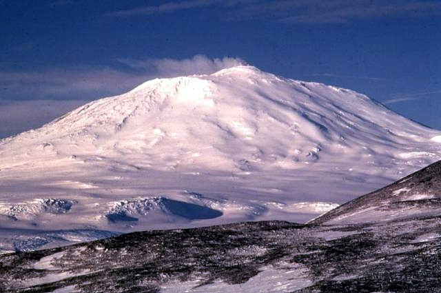
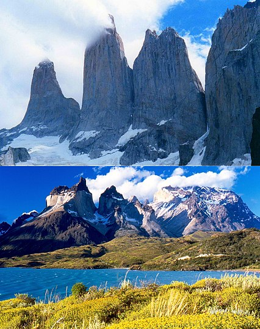

Antarctica (/ænˈtɑːrtɪkə/ or /ænˈtɑːrktɪkə/ (About this soundlisten))[note 1] is Earth's southernmost continent. It contains the geographic South Pole and is situated in the Antarctic region of the Southern Hemisphere, almost entirely south of the Antarctic Circle, and is surrounded by the Southern Ocean. At 14,200,000 square kilometres (5,500,000 square miles), it is the fifth-largest continent and nearly twice the size of Australia. It is by far the least populated continent, with around 5,000 people in the summer and around 1,000 in the winter. About 98% of Antarctica is covered by ice that averages 1.9 km (1.2 mi; 6,200 ft) in thickness,[5] which extends to all but the McMurdo Dry Valleys and the northernmost reaches of the Antarctic Peninsula.[6]
Antarctica, on average, is the coldest, driest, and windiest continent, and has the highest average elevation of all the continents.[7] Most of Antarctica is a polar desert, with annual precipitation of 200 mm (8 in) along the coast and far less inland; yet 80% of the world freshwater reserves are stored there, enough to raise global sea levels by about 60 metres (200 ft) if all of it were to melt.[8][6] The temperature in Antarctica has dropped to −89.2 °C (−128.6 °F) (or even −94.7 °C or −138.5 °F, as measured from space),[9] though the average for the third quarter (the coldest part of the year) is −63 °C (−81 °F). Organisms native to Antarctica include many types of algae, bacteria, fungi, plants, protista, and certain animals, such as mites, nematodes, penguins, seals and tardigrades. Vegetation, where it occurs, is tundra.
Antarctica was the last region on Earth to be discovered, likely unseen until 1820 when the Russian expedition of Fabian Gottlieb von Bellingshausen and Mikhail Lazarev on Vostok and Mirny sighted the Fimbul ice shelf. The continent remained largely neglected for the rest of the 19th century because of its harsh environment, lack of easily accessible resources, and isolation. In January 1840, land at Antarctica was discovered for the first time, almost simultaneously, by the United States Exploring Expedition, under Lieutenant Charles Wilkes; and a separate French expedition under Jules Dumont d'Urville. The latter made a temporary landing. The Wilkes expedition—though it did not make a landing—remained long enough in the region to survey and map some 1,300 kilometres (800 mi) of the continent. The first confirmed landing was by a team of Norwegians in 1895.
Antarctica is governed by parties to the Antarctic Treaty System. Twelve countries signed the Antarctic Treaty in 1959, and thirty-eight have signed it since then. The treaty prohibits military activities, mineral mining, nuclear explosions and nuclear waste disposal. It supports scientific research and protects the continent's ecology. Between 1,000 and 5,000 people from many countries reside at research stations scattered across the continent.
antarctica wonders
Airdevronsix Icefalls
Airdevronsix Icefalls (77°31′S 160°22′ECoordinates: 77°31′S 160°22′E) is a line of icefalls at the head of Wright Upper Glacier, in Victoria Land, Antarctica. Named by U.S. Navy Operation Deepfreeze (1956–57) for U.S. Navy Air Development Squadron Six, which had been formed to provide air support for the Deep Freeze operations and which had also carried out many important Antarctic exploratory flights.
This icefall belongs to world's most impressive natural landmarks and is approximately 5 kilometres (3.1 miles) wide and 400 metres (1,300 feet) tall. It has formed on Jurassic dolerite sill, which has intruded in Devonian - Triassic sandstone.[1]

Mount Erebus
Mount Erebus ( /ˈɛrɪbəs/) is an active volcano, the second-highest in Antarctica (after Mount Sidley) and the southernmost active volcano on Earth. It is the sixth-highest ultra mountain on the continent.[1] With a summit elevation of 3,794 metres (12,448 ft), it is located in the Ross Dependency on Ross Island, which is also home to three inactive volcanoes: Mount Terror, Mount Bird, and Mount Terra Nova.
The volcano has been active since about 1.3 million years ago and has a long lived lava lake in its inner summit crater that has been present since at least the early 1970s.
The volcano was the site of the Air New Zealand Flight 901 accident, which occurred in November 1979.
Blood Falls
Blood Falls is an outflow of an iron oxide-tainted plume of saltwater, flowing from the tongue of Taylor Glacier onto the ice-covered surface of West Lake Bonney in the Taylor Valley of the McMurdo Dry Valleys in Victoria Land, East Antarctica.
Iron-rich hypersaline water sporadically emerges from small fissures in the ice cascades. The saltwater source is a subglacial pool of unknown size overlain by about 400 metres (1,300 ft) of ice several kilometers from its tiny outlet at Blood Falls.
The reddish deposit was found in 1911 by the Australian geologist Griffith Taylor, who first explored the valley that bears his name.[1] The Antarctica pioneers first attributed the red color to red algae, but later it was proven to be due to iron oxides.
McMurdo Dry Valleys
TThe McMurdo Dry Valleys are a row of largely snow-free valleys in Antarctica, located within Victoria Land west of McMurdo Sound.[1] The Dry Valleys experience extremely low humidity and surrounding mountains prevent the flow of ice from nearby glaciers. The rocks here are granites and gneisses, and glacial tills dot this bedrock landscape, with loose gravel covering the ground. It is one of the driest places on Earth and has not seen rain for nearly 2 million years.[2]
The region is one of the world's most extreme deserts, and includes many features including Lake Vida, a saline lake, and the Onyx River, a meltwater stream and Antarctica's longest river. Although no living organisms have been found in the permafrost here, endolithic photosynthetic bacteria have been found living in the relatively moist interior of rocks, and anaerobic bacteria, with a metabolism based on iron and sulfur, live under the Taylor Glacier.

Warren Icefall
Warren Icefall er eit isfall som går ut i den sørlege delen av Øvre Wrightbreen nord for Vortex Col i Asgard Range i Victoria Land. Han vart namngjeven av Advisory Committee on Antarctic Names (US-ACAN) (2004) etter Alden Warren i geografiavdelinga til U.S. Geological Survey og fotograf i førbuinga av karta til US Geological Survey (USGS) i Antarktis, 1956-2004.
Lake Vanda
Lake Vanda is a lake in Wright Valley, Victoria Land, Ross Dependency, Antarctica. The lake is 5 km long and has a maximum depth of 69 m.[2] On its shore, New Zealand maintained Vanda Station from 1968 to 1995. Lake Vanda is a hypersaline lake with a salinity more than ten times that of seawater[3] and more than the salinity of the Dead Sea. Lake Vanda is also meromictic, which means that the deeper waters of the lake don't mix with the shallower waters.[4] There are three distinct layers of water ranging in temperature from 23 °C (73 °F) on the bottom to the middle layer of 7 °C (45 °F) and the upper layer ranges from 4–6 °C (39–43 °F).[5] It is only one of the many saline lakes in the ice-free valleys of the Transantarctic Mountains. The longest river of Antarctica, Onyx River, flows West, inland, into Lake Vanda. There is a meteorological station at the mouth of the river.

.jpeg)
.jpeg)